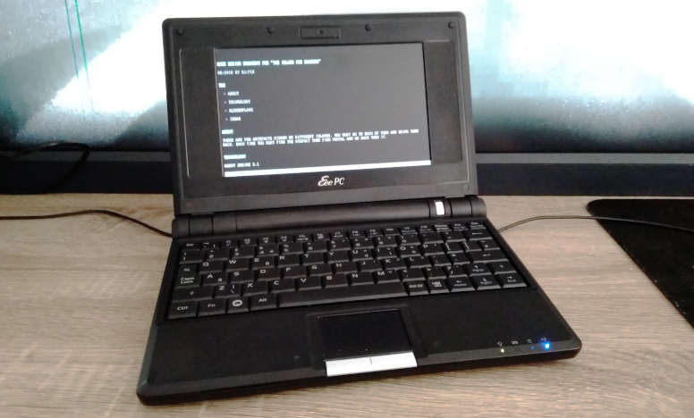

Resurecting an EEE PC Netbook with Debian
I bought an classic ASUS EEE PC 701SD.

I tested a few distributions and desktop environments but with no luck. Mostly because this computer have only 1GB ram and old Celeron 900Mhz. On that kind of machine everything runs slow. By default. But this is a GNU/LINUX. It works on everything. So I changed my approach to this problem. Instead of searching for faster distro I first decide what I need in terms of software.
My ultimate goal is to have small Linux computer with good keyboard (mechanical) for remote writing. Closes to this dream is freeway writer. But it's expensive and very, very limited. EEE PC + external keyboard seems close enough.
Thinking from this perspective I could run just any Linux with decent word-processor. And the best word-processor I know and love is wordgrinder. A terminal application. Then why I even need a desktop in the first place? It turns out that was the answer to most of my problems (with low spec computers).
I put Debian 9.5 minimal install on the EEE PC. Terminal only. And then, using apt install only the necessary applications. What did I choose?
Essentials:
- wicd, wicd-daemon wicd-curses; for connecting to WiFi
- mc; for file/dir management
- htop; process monitor
- git
- wordgrinder; to write this post
- ltp; power management for laptops
- woof; for simple file sharing over the local network
- acpi; for battery info
- links; for web browsing, duckduckgo/wikipedia
Additional:
- ncdu; Disk Usage utility, useful for small storages
- neofetch; for cool info about the system
- figlet; for generating huge text banners, useful for scripts
- ansiweather; for easy weather forecast
- vrms; just to be sure the RMS is proud of me ;)

This setup cost me less than 1GB of storage. I made some scripts to mimic desktop environment. Instead of icons for most used apps I have aliases. For windows I have [alt]+[arrows] that works like [alt]+[tab]. And each app/terminal is in full-screen non-distraction mode by default :)
For wikipedia and some basic duckduckgo stuff Links is enough I need.
And beside the OS, the hardware itself is small, quiet and just cute.
Tags: linux
Word Grinder

Once in a while I found some new software that's so perfect for my needs as if I write it myself. One of those is a Word Grinder. It's a terminal word processor for processing words (quote from the homepage). Nothing less, nothing more. Perfect.
Why?

Most important thing while writing longer text is to avoid any distractions. Word Grinder puts you right into the document and hides everything else. No menus, no toolbars. There is a status bar at the bottom by default but it can be easly hidden (toggle view). Afther that it looks and behave like any modern "distraction free" editor. So the real question is why do you need those when there is already Word Grinder.
It works on any Linux powered computer. It's super fast and lightweight. All you need is a terminal. Raspberry Pi Zero can do that. And on Debian it's already installed.

It is a word processor not a text editor. For those that don't know the difference: one can make text bolder, underline, set heading, bullet lists, etc and the other not. It can import/export Open Document Format files. So it's compatible with LibreOffice Writer. It can export as HTML and Markdown also. For my simple needs it's more than enough.
I just like terminal applications. Perhaps I'm just old enough that it reminds me the good old days. Or I'm old enough to understand that all those visual effects like windows, toolbars or icons are unnesesary. At last for applications like this. All I need is a blank page to fill.
Conclusion
I always try to make VIM as simple and as easy to write articles. It was possible but it requies config and some plugins. Managing thoes on multiple computers (including bunch of Raspberry Pi's) was too complicated.
Word Grinder makes this all obsolete. I's perfect as it is. Combining it with good mechanical keyboard is an "end game" of distraction writing for me.
Highly recommended. Give it a try. You'll love it.
Updated Software and Hardware Stack
Over the years I'm changing hardware and software to create my perfect setup. Hardware those days are not changing that fast. Today 5 year old computer is more than good. But software is rapidly updating and new created. Also my switch to Linux makes this even more dynamic as I yet not know everything and still learning this awesome OS.
Hardware
- Dell Rugged Extreme (7204) i5/8GB/256 SSD/touch screen
- Dell P1914S (5:4, 1280x1024)
- Vortex Pok3r (mechanical keyboard with Cherry MX Browns)
- Kensington Orbit (trackball)
This did not change. It's still the best laptop I own. I can use it in the shower (water proof) or throw it to the ground (shock proof). And the Pok3r keyboard with brown switches is superb. I do a lot of coding/writing and can't see doing this without mechanical keyboard.
- Sonim 3300 (rugged phone)
- FiiO X3 (HiFi music player)
- Grado SR 80e (headphones)
I don't need smartphone - I have enough computers around me. And I need rugged phone. Sonim is one of the best and it's indestructible. As of music I'm a little audiophile and FiiO/Grado gives me the best sound I can imagine.
Software
As hardware stays the same I can't say this about the software.
OS
- Fedora 25
- GNOME
Apps
- Vivaldi (web)
- Terminal with tmux
- Vim/gVim (code/writing)
- rsync (files sync)
- Syncthing (backup/sync)
- gFTP (sftp)
- CherryTree (notes)
- Quod Libet (music player)
- digiKam (photos)
- GIMP (graphics)
- Aseprite (pixelart)
Services
- Tutanota (mail)
- Google Mail HTML version (mail)
- Discord (IM)
- Facebook Messenger (IM)
- YouTube (video)
- Gaia TV (video)
- Reddit (news)
- Slashdot (news)
- Allegro (shopping)
- Aliexpress (shopping)
- Bandcamp (music)
- Digitally Imported (music)
Tags: hardware, software, linux
Switching Software and Canceling Subscriptions
Recently I came to the conclusion that lot of services I pay for are not that grate. And there is always that Stallman philosophy that all companies are evil and want to steal my data and information about me. Last but not lest why to pay if I can use open source and spend money on something nicer (like a film pack for my Lomo'instant camera)?
Hosting
More than year ago I canceled Dreamhost hosting after they suspend my account for no reason. My little Raspberry Pi B was good enough for hosting few simple sites since then. Now I have little server room with four of them with redundancy and backups.
Dreamhost to Raspberry Pi
Sublime Text
I have only company license that I use on OSX. At home (Linux) I was using Sublime for a long time. I eventually wanted to buy my privet license. But I came to conclusion that it will be much better to just learn something new and exciting - VIM. And yes, it was hard but after few weeks I don't want to go back. VIM is superb.
Sublime Text to Vim
Adobe Creative Cloud
I have been using Photoshop since version 5.5 (1999). Many, many years. I pirated every new version as it cost like new computer since Adobre presented the CC. A subscription based service. And it was cheap in compare. I subscribe to bundle for photographers: Photoshop + Lightroom. New versions was introduced every few months. But to be hones they were all the same. I even tested Photoshop CS2 once (2005) and did not see any new features that I would use in the latest CC (2016). So after 11 years they do not add anything that I needed. Too bad CS2 do not work on Intel processors. I was searching for alternative for many years. Yet there is no real competitor even now. The closest is Pixelmator (OSX) that I bought 5 years ago and the latest version of GIMP (Linux). So after I become more a pixel artist and less web designer I decided that I no longer need full Photoshop. For small designs on OSX I'm using Pixelmator. And on Linux I started to learn GIMP. It's not that bad as it was years ago. It has finally a one window - no more floating bullshit.
As a photographer I get back to the analog as my main camera (Fuji X-Pro1) broke. And my second camera (Fuji X-100) is superb in shooting JPEGs. But that doesn't mean I don't need a good RAW converter. But I found that Lightroom 5 is basically identical to the CC version and extremely cheap (~$15). And for Linux there is digiKam.
Adobe Photoshop CC to Pixelmator and GIMP
Adobe Lightroom CC to Adobe Lightroom 5 and digiKam
Dropbox
The last service that I pay monthly subscription was Dropbox. I was using it for two main reasons: backup and syncing. It have Linux and OSX integration and it's simple to use. But it's slow and they subscription sucks: free account (~9GB) or 1TB for $10. And I'm using ~15GB. And for this 6GB more I needed to pay for full 1TB. Nonsense. I don't even have a hard drive that big. So yesterday I installed Syncthing on every computer I own (2x OSX, 1x Linux). It was a little bit more complicated but not for a programmer. I just needed to make it auto start and sit in the background. For OSX I created simple .plist for ~/Library/Launcher and for Fedora I added .desktop file to ~/.config/autostart/. But to have it working always I needed some server. So I finally used my Raspberry Pi 3 for something useful. For now it is using internal SD card (13GB free space) to store synced data. But I will be buying two 64GB flash disks (for redundancy). After initial setup everything is working smooth and automatic. It's free, super secure (you can't say that about Dropbox) and open source.
Dropbox to Syncthing
Conclusion
I don't want to sound like Stallman but free and open software is much better. It respects me and my data. And I learn a lot setting up or learning to use new software. Also I spend less and less money on absurd subscriptions.
I still pay for SmugMug, Digitally Imported radio and Gaia TV. But storing photos (a lot of them!) is more complicated and music/entertainment is a different thing (and those two are not mainstream services).
Tags: linux, open source, photoshop, syncthing, gimp, raspberry pi
Fedora 25, Learning Vim and maintaining Raspberry Pi Servers

Blog
This blog was as not updated in a while. Last post is from August. So I decided to write a little bit of update.
I changed my linux distro to Fedora, my Sublime Text to Vim and started to modernize and automate my Raspberry Pi servers.
Fedora
For last few months I was using openSUSE on my maing machine and one of Raspberry Pi. It was all good but here and there I started to have little problems. On Rpi it was not so smooth like Raspbarian. On my Dell the KDE was horrible for touchscreen. I needed Gnome. And what distro is best know for supporting Gnome? Fedora.
Last month Fedora updated to version 25. The biggest change was that it finnaly running on Wayland. And this is a significant change. It's super fast and fluid (after disabling all animations). DNF package manager works also very well. I did not have any problem so far. I install all my essential stuff. Vivaldi, Quod Libet, digiKam, GIMP, CherryTree, Steam, Redshift, Dropbox.
Then configure GNOME to be more user-frendly. Like moving status icons to the top and app icons/panel to the bottom of the screen. I feel like in home.
My speaker in Dell is always muted on start so I needed to write a little .desktop script to unmute it at each login.
Vim
Oh Vim. I learn how to quit years ago. I even know how to switch to edit mode and get back. And that was my whole knowleage over the years. And week ago I decided that it's time to change this.
I bought a little pocket book with all the sortcuts. I wached few essential videos on YouTube. And then I started to read vimtutor. And after few days I get hooked.

Vim is perfect. I still can not use it in work with our huge project but at home I don't even have Sublime installed. And I do not want to anymore. I can do all the cool things in Vim. Some times it's hard but because I don't know how not because of Vim.
I have Vortex Pok3r keybard that is a perfect companion with Vim. I has [ESC] quite easy to reach and - the best part - it has arrows as IJKL. Almost like Vim but in normal position (triangle). So I do not need to force myself to learn HJKL. I tried and kinda can use it but why if I have the better option?
I always loved distraction free editors mode. In Vim it's always distraction free :) Also I use Vim to code my little Python aplications and this blog!
There is a long road to go before I become a fluid Vim user. But I like to learn and be more and more productive thanks to it.
It will be a fun time.
Raspberry Pi Servers

My little server grows. From one Pi that serves everything to three units. It's still not perfect but for now it looks like this:
- main Pi (the one in the jar) for all P1X websites and reverese proxy to another Pi
- secondary Pi that is a clone of the main Pi just for redundancy
- third one for that serves proxy domain
I have 3 commercial websites and one Pi with domain that are my collegue. I rented him (for free) space, power and fast internet connection. It becomes serious.
I have one more Pi but I don't have any free ethernet ports in router nor power adapters for it. That's why I bought switch (8 ports) and nice powered USB hub (8 ports) along with 2.2A usb cables. They shoudl get to me sometime next week.
I need to write some scripts to automaticly synchronize /www/ between those two main and backup Raspberry Pi's. And then decide what to do with the last one that for now is waiting for power. It's the latest Pi 3B. It has 4 cores. What can I do to use them?
Tags: vim, linux, raspberry-pi
How I broke and fix my linux distro
One day (yesterday) after waking up the laptop I found out that something is wrong. The login manager was corrupted. Whenever I press spacebar or clik on my login name it crashes (black screen, white screen) and then starts over. So basicly I can not login to the system.

Panic
First toughts was as always - panic that yet another update broke my system. I did not know what was wrong. This mean reinstall for me. But I have too much stuff already set up to just do it all over again. So I decidet to at last try to investigate.
Investigation
I was able to swith to the console at F1. From there when I run startx I get fwm and some terminals open. Good I have at last working sytem. I edited the X init stript and change fwm to gnome-session. Restart the X.
System (X/Gnome) works as nothing happened. So now I was certain that the broken part is login manager.
I found out I have lightDM installed with some eyecandy greeter. And this is probably the source of problems. I have Webkit2 greeter instaled. And there are also (available) GTK+, Unity and KDE. GTK+ looks much lighter than Webkit.
Fix
I just remove all lightDM packages. And then install lightDM + GTK+ greeter + configurator for X.
System restart...
It works! Now I have new greeter that is much better. Who need all those funcy stuff? I just want to type my password. No more no less.
Conslusion
Never panic. Try to get what is working and what not. Remember that linux always have [ctrl][alt][f*] consoles in the "background".
And the best thing about all this is that after configuring GTK+ greeter it looks better and runs faster than before (Webkit). It's simple and elegant. And just works.
Another good day in my (new) linux life as a developer :)
My current game development stack
For years I was using MacBooks as my primary computers for everything. But as I gain experience in Linux I started to use more open/free software. Here are my current setup both in hardware and software. It’s definitely not final and I still perfecting it.

Hardware
When I’m outdoor I mostly use only the laptop. But when I’m home or doing some 48h hackathon I use all of those:
- Dell 7204 Rugged Extreme (i5/8/256)
- Dell P1914S (4:3, 1280x1024)
- Vortex Poker III (keyboard with Cherry MX Browns)
- Kensington Orbit (trackball)
The best part is that Dell 7204 have touch screen that can be flipped and the whole laptop can transform into (rather bulky) tablet. For pixel artist this is a dream machine. I no longer need to bringing my Wacom tablet anymore! Also touch in linux is now supported very well so I use my fingers a lot in day-to-day situations too.
I really like the 4:3 monitors. They’re small on desk but have lot of working space. They have the best medium to edit A4 documents. Or any code. Or photos. They are just perfect.
For any coder good keyboard is a main accessory. Mechanical keyboards are what I really need to do lot of writing. I choose Pok3r because it’s 60% keyboard - small but have all the buttons I really use.
Lot of peoples ask me about trackball - why I use it, is it better, etc… What I can say? I really don’t know. I never use any so I just bought one to test if it’s something for me or not. Turns out I fall in love from day one :) But to this day I can not say why. I just like to use it.
Software
This is the place where I constantly find something new. The last thing that I relay on that’s not free nor open is Adobe Photoshop.
Base
Standard linux setup. I use Debian-based distros for some time but when I discovered Arch I never get back. For windows management I love XFCE as it's fast and essential. But now, as I have touchscreen the only enviroment that supports it is GNOME. And GNOME is really fine. But slow...
- Linux (Arch/Antergos)
- GNOME (best for touch monitors)
Development
Nothing spectacular in this area. I use vim/nano when doing console based stuff. But to do actual code there is nothing better than Sublime!
- Godot Engine
- SublimeText 3
- Git (Terminal/GitKraken)
- gFTP
Graphics
I have Adobe CC licence for my MacBooks (Photoshop&Lightroom) but on Linux there is no alternative. Happily CS2 works in Wine good enough so I can now do all my work on Linux machine.
- Adobe Photoshop CS2 @Wine (main tool)
- Aseprite (pixel art)
- Scribus (print stuff)
- FontForge (fonts)
- Blender (modeling/rendering)
100 days of Raspberry Pi server
Our main web server - the Raspberry Pi B - celebrates 100 days of constant running! It serves much longer but after adding real UPS to it I never restarted it since. And today during maintanance work on I type 'uptime' just for curiosity.

Yes, Raspberry Pi @raspbarian is very, very stable. It serves only few PHP/HTML light pages. But still it's impressive to see this little computer doing it's job well done. All without any hassle.
To celebrate this event I did the full backup! Guess when was the last time I did one ;) But it was not an ordinary backup - I did an image of the entire SD card on-the-fly. Image was writing to the external SD card of another Raspberry Pi.. and in the end pushed to the Dropbox. I read this article about this method. It runs flawlessly.
Tags: raspberry-pi, server, linux